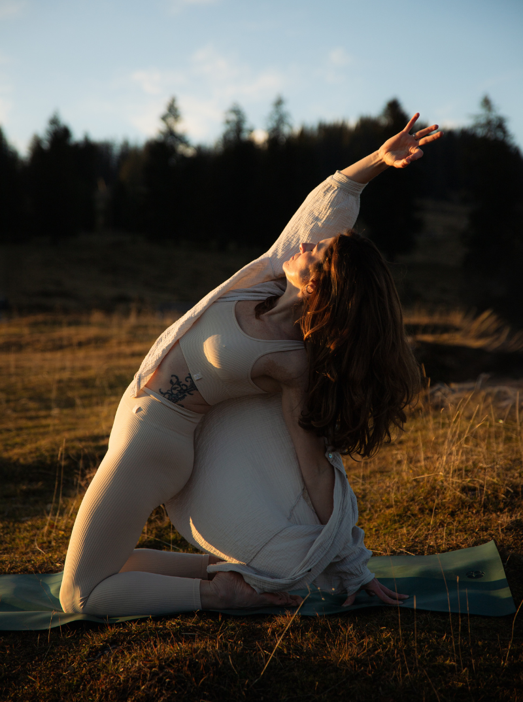
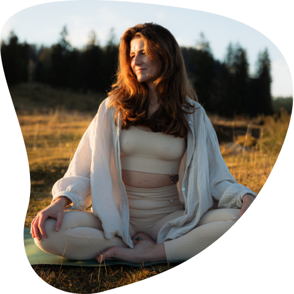
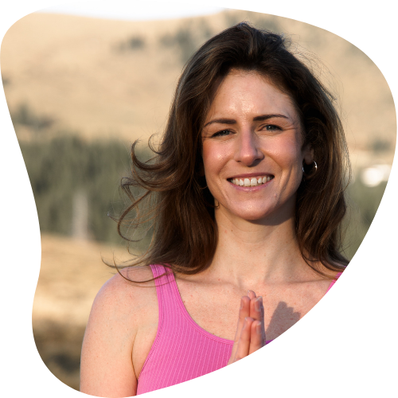

Zwischen Bewegung und Stille
liegt ein Raum, in dem du dich selbst wieder spüren darfst.
Mein Stil

Hier bei mir findest du Raum, in dem du einfach du selbst sein darfst. Einen Ort, an dem du deine Gefühle spüren, deinen Körper wahrnehmen und ganz bei dir ankommen kannst. Ich begleite dich mit Achtsamkeit, Klarheit und einem offenen Herzen. Mir ist es wichtig, eine kleine Oase zu schaffen, in der du dich fallen lassen kannst und der Alltag für einen Moment in den Hintergrund rückt.
Meine Stunden basieren auf klassischem Hatha-Yoga, mit fließenden Vinyasa-Elementen und ruhigen Yin-Phasen. Sie sind kreativ, abwechslungsreich und oft kraftvoll. Mir ist wichtig, den Körper gut aufzuwärmen und Schritt für Schritt auf die Asanas vorzubereiten, damit du ihre Wirkung wirklich spüren kannst. Körper und Geist dürfen gefordert werden, jedoch nie über ihre Grenzen hinaus. Gleichzeitig gibt es immer wieder Raum für Ruhe, Integration und Nachspüren. Mein Yoga bewegt sich zwischen Ankommen, Halten und Loslassen – und darf sich in deinem eigenen Tempo entfalten.
 GLEICH ANMELDEN
GLEICH ANMELDEN
Auf einen Blick
- Expertise: Hatha, Vinyasa
- Körperarbeit: Nuad Thai Massage, Sound Bath
- Stärken: Individuelle Begleitung, achtsame Atmosphäre, klare Ausführungshinweise
- Standorte: Rüstorf (VAZ) · Ohlsdorf (Mezzo) · Online
- Firmenyoga: Vor Ort und online für Unternehmen
Bereit für deine Auszeit?
 KONTAKTIERE MICH
KONTAKTIERE MICH

Teilnehmer Stimmen
Kontakt
Ich freue mich auf deine Nachricht!
Gerne beantworte ich deine persönlichen Anfragen für maßgeschneiderte Kurse oder vielseitige Impulse (Workshops).
 JETZT WHATSAPP
JETZT WHATSAPPCHAT BEITRETEN Corina Ung
Kerblweg 45
4663 Laakirchen